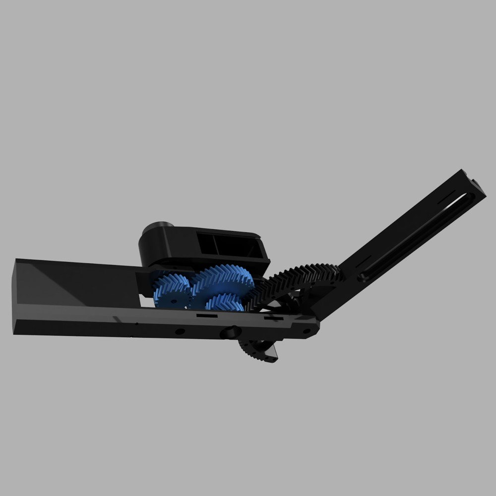
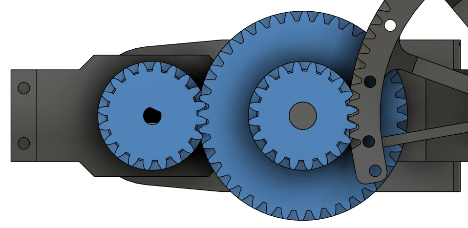
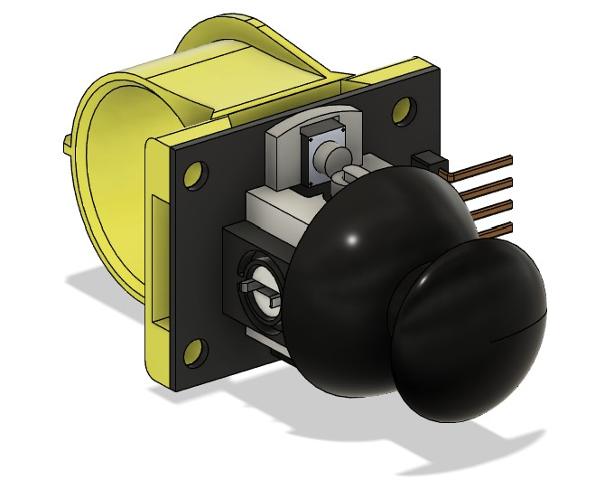
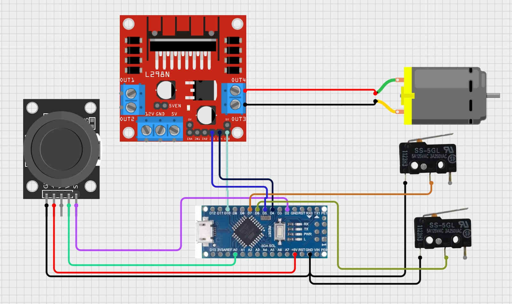

A custom reduction gearbox
The motor drives a custom 8:1 reduction gearbox with helical gears, designed to handle the torque needed at the elbow joint. The slide deck specifies a target output speed of 25 rpm.
A wearable arm-assistance prototype with a geared elbow joint and a finger-mounted joystick. Built for Cornell’s 2025 Makeathon theme, “tech for well-being.”

Bicep Boost is an exoskeleton prototype intended to assist arm lifting and rehabilitation exercises. Our team—Christy Cheung, Zack Ginesin, Keegan Lewick, and me—built it for Cornell Makeathon 2025 and placed first among approximately 40 hardware and software teams.
The build combines an adjustable forearm mechanism, a custom geared joint, and a joystick worn on a finger. The project explores how a compact mechanical aid can let a user command assisted arm movement.
The motor drives a custom 8:1 reduction gearbox with helical gears, designed to handle the torque needed at the elbow joint. The slide deck specifies a target output speed of 25 rpm.
The forearm mechanism has an adjustable length, built-in wire management, and a switch mount. Limit switches are included to constrain travel and reduce the risk of mechanical overrun.
A custom ring holds the joystick within reach of the user’s fingers. This keeps the input close to the wearer while the mechanism supplies the arm motion.
The electrical diagram connects a joystick to an Arduino Nano, which commands a DC motor through an L298N driver. Two limit switches provide end-of-travel inputs.
The team demonstrated the working prototype at the Makeathon.


